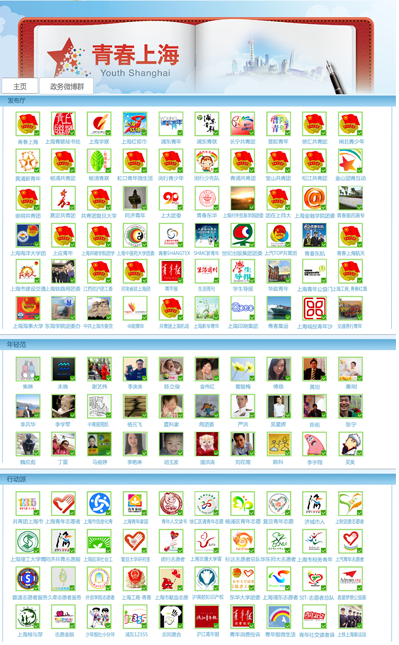
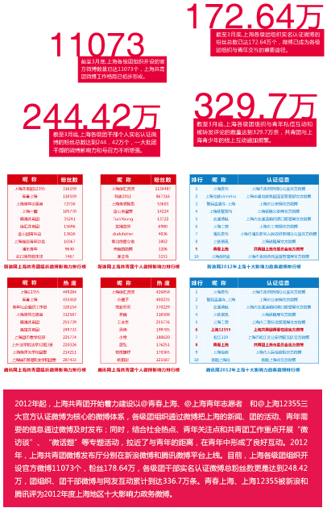
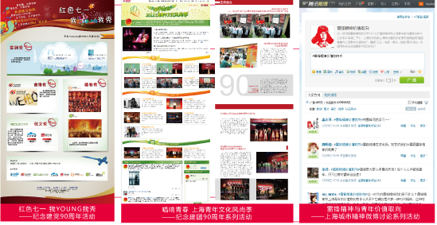
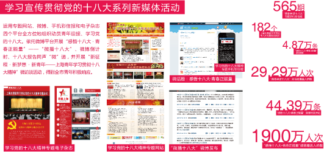

上海共青团高举理想信念旗帜，充分运用技术手段，拓展新媒体领域，打造全媒体传播渠道，丰富各类青少年网络文化产品，与青少年之间的沟通更紧密，互动更灵活，影响更深入，共青团思想引领工作体现出新的成效。
自2009年起，上海共青团不断推进信息化和新媒体工作建设步伐，不断推出新的应用和新媒体活动，并着力打造“青春上海”新媒体品牌。目前已开通、编发了“青春上海”官方微博、“青春上海”微信公众号、“青春上海”手机彩信报、《青春上海》电子杂志以及“青春上海”视频空间，并组织开发了“青春上海”电子书架客户端。


上海共青团始终坚持教育引领为主线，高举理想信念的旗帜，注重运用新媒体的形式、发挥新媒体的特点，网言网语、生动活泼，用青年喜闻乐见的形式传递党的声音。在纪念建党九十周年、建团九十周年系列活动以及上海“两会”召开等重要节庆、重点会议和活动期间，上海共青团切实做好新媒体的内容建设方案，从青年的视角、运用网络的语言对活动进行跟踪报道，弘扬时代的主旋律，形成了积极向上的舆论导向，在青年中起到主流引导的积极作用。


在学习贯彻党的十八大精神活动中，上海共青团通过专题网站、微博、手机彩信及电子杂志等，组织动员青年投身学习“十八大精神”的活动，得到全市各青年群体积极响应。全市各级团组织共编发“青春共话十八大”专题手机彩信报565期，覆盖青年29.29万人次；“感悟十八大•青春正能量”活动原创微博4.87万条，微博转发及评论44.39万条，微博覆盖人群1900万人次。